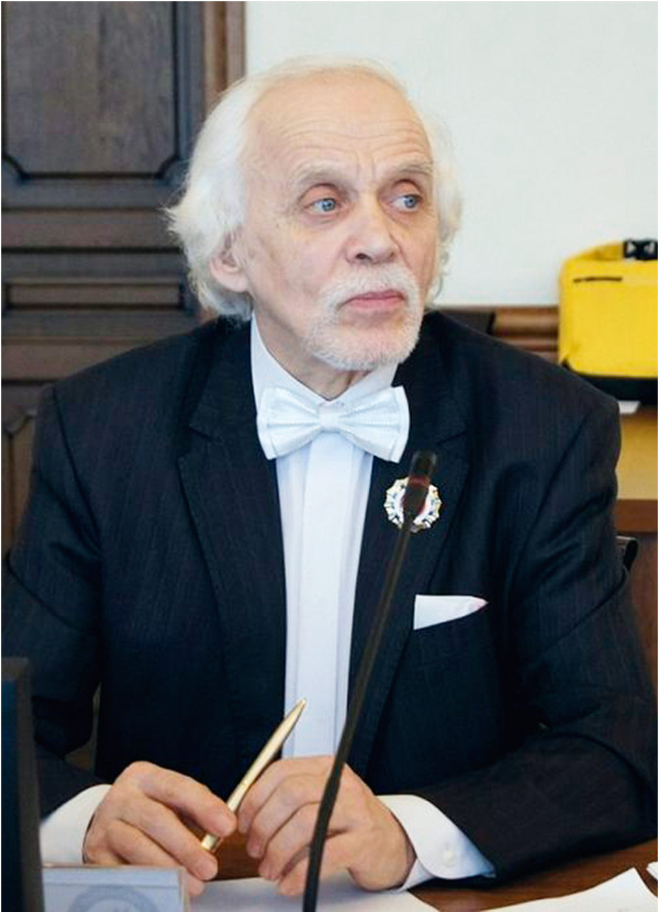

От первого лица · с. 43–45
Александр Россинский. Жизнь, посвящённая музыке
Авторская рубрика Анастасии Ушаковой. Алтайская виолончельная школа и ученик Г.И. Пеккера
Когда говорят о выдающихся представителях виолончельного искусства, чаще всего вспоминают музыкантов столичных сцен, лауреатов крупнейших международных конкурсов и профессоров ведущих консерваторий. Однако музыкальная культура существует не только благодаря громким именам. Во многом её основу создают люди, которые десятилетиями работают в регионах, воспитывают поколения учеников, формируют профессиональную среду и сохраняют преемственность традиций.
Одной из таких фигур для Алтайского края стал Александр Георгиевич Россинский – виолончелист, педагог, дирижёр, общественный деятель и один из создателей современной виолончельной школы региона. Его имя хорошо известно нескольким поколениям музыкантов Сибири, однако за пределами профессионального сообщества о подобных личностях говорят значительно реже, чем они того заслуживают.
Особое место в творческой биографии Александра Георгиевича занимает связь с выдающимся советским виолончелистом и педагогом Григорием Ильичом Пеккером. Россинский обучался в Новосибирской государственной консерватории в классе Пеккера – музыканта, которого по праву называют основателем сибирской виолончельной школы. Именно через своих учеников Григорий Ильич передал традиции исполнительства и педагогики во многие города Сибири, а Барнаул стал одним из важнейших центров этого наследия.
Приехав в Барнаул в середине 1960-х годов, Александр Георгиевич посвятил развитию музыкальной культуры региона более полувека. Он преподавал виолончель, камерный ансамбль и квартет, руководил коллективами, участвовал в культурной жизни края и способствовал формированию профессионального музыкального сообщества. Многие его ученики связали свою жизнь с музыкой, продолжив традиции своих педагогов уже в новом поколении.
«Александр Георгиевич – удивительный, неординарный человек и педагог! Он всегда учил нас прежде всего наполнять эмоцией и смыслом каждый сыгранный звук, и делал это с присущим ему юмором и яркой эмоциональностью! При этом он ещё всегда пробуждал в нас интерес почитать о композиторах, представить каждую эпоху не только в музыкальном искусстве, но и в целом, так как и он сам обладает широкой эрудицией во многих областях. Его яркая речь не оставляла равнодушным никого из нас! На его уроках никогда не заскучаешь».
Галкина Анна Александровна, преподаватель Алтайского государственного музыкального колледжа, доцент кафедры искусствоведения и креативных индустрий Алтайского государственного университета
Особенно важно, что профессор Россинский не только сохранял традицию, но и стремился сделать её живой и актуальной. По его инициативе в Барнауле появился Международный фестиваль-конкурс имени Григория Ильича Пеккера – проект, объединивший молодых виолончелистов из различных регионов России и стран ближнего зарубежья. Конкурс стал не только данью памяти великому педагогу, но и продолжением той самой школы, частью которой когда-то был сам Александр Георгиевич. Мне посчастливилось наблюдать за конкурсом имени Пеккера практически с самых первых лет его существования и принимать участие в его работе в качестве члена жюри. Поэтому об Александре Георгиевиче я могу судить не только по его профессиональным достижениям, но и по личным впечатлениям.

То, с каким энтузиазмом он продолжает заниматься своим делом, вызывает искреннее уважение. Александр Георгиевич всей душой служит музыкальной культуре Барнаула и Сибири, поддерживает молодых музыкантов и делает всё возможное для развития виолончельного искусства в регионе. Сегодня таких людей становится всё меньше. В эпоху, когда многие предпочитают говорить о проблемах, он продолжает создавать возможности, объединять людей и двигаться вперёд.
Особенно удивительно видеть эту энергию спустя десятилетия педагогической и общественной деятельности. Сегодня Александру Георгиевичу 83 года, однако, несмотря на огромный опыт и заслуженный авторитет, он остаётся человеком, удивительно открытым ко всему новому. Накануне V Международного конкурса имени Пеккера мне запомнился разговор, в котором он с большим воодушевлением рассказывал о Concertino Мечислава Вайнберга – произведении, которое даже в Москве услышишь нечасто. Увлечённость этой музыкой была настолько искренней, что невольно заражала окружающих. Именно по его инициативе это сочинение прозвучало на открытии конкурса в исполнении его студентки с оркестром.
Александр Георгиевич не ограничивается сохранением традиций, а постоянно ищет новые смыслы, новые произведения и новые возможности для своих учеников. Он поддерживает связь со своими выпускниками независимо от того, в каких городах и странах они продолжают свой путь, интересуется их профессиональным развитием, следит за новыми направлениями исполнительского искусства, включая исторически информированное исполнительство, занимается исследовательской деятельностью и публикует научные статьи.
«Александр Георгиевич становится для каждого ученика не только учителем, но и наставником, даже родителем. Помимо музыки, на уроках специальности обсуждалась философия, литература и межличностные отношения. Александру Георгиевичу очень важно, чтобы каждый его ученик стал не просто хорошим музыкантом, а смог построить крепкую семью и счастливую жизнь. Также готов помочь всем, чем сможет, если случилась неприятная жизненная ситуация. Умеет донести, как важно дисциплинированно заниматься на инструменте и разносторонне развиваться. Спустя 6 лет после окончания колледжа мы регулярно поддерживаем связь, и Александр Георгиевич с теплом и заботой интересуется тем, как дела, что происходит в жизни, а я с большой радостью звоню и делюсь событиями».
Кукушкина Арина, выпускница МГК имени П. И. Чайковского, выпускница Алтайского государственного музыкального колледжа, класс А.Г. Россинского
Наверное, именно здесь наиболее ярко раскрывается личность Александра Георгиевича Россинского – человека, сумевшего объединить в себе качества педагога, музыканта, организатора и исследователя. Спустя многие десятилетия в профессии он по-прежнему сохраняет редкое любопытство к новому, интерес к жизни и стремление двигаться вперёд.
История Александра Георгиевича напоминает о том, что музыкальная культура строится не только в крупных городах. Она рождается и развивается там, где есть люди, готовые посвятить свою жизнь искусству, воспитанию учеников и созданию среды. Именно благодаря таким мастерам сохраняется преемственность поколений и продолжается история российской виолончельной школы.